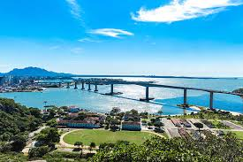

O Espírito Santo é um estado da Região Sudeste do Brasil, com capital em Vitória. Tem cerca de 4 milhões de habitantes. A economia é baseada na agricultura, indústria, portos e turismo. O estado é conhecido por suas belas praias, como Guarapari e Vila Velha, além de montanhas e áreas naturais. A cultura do Espírito Santo mistura influências indígenas, africanas e europeias, destacando-se a moqueca capixaba, prato típico da região.
